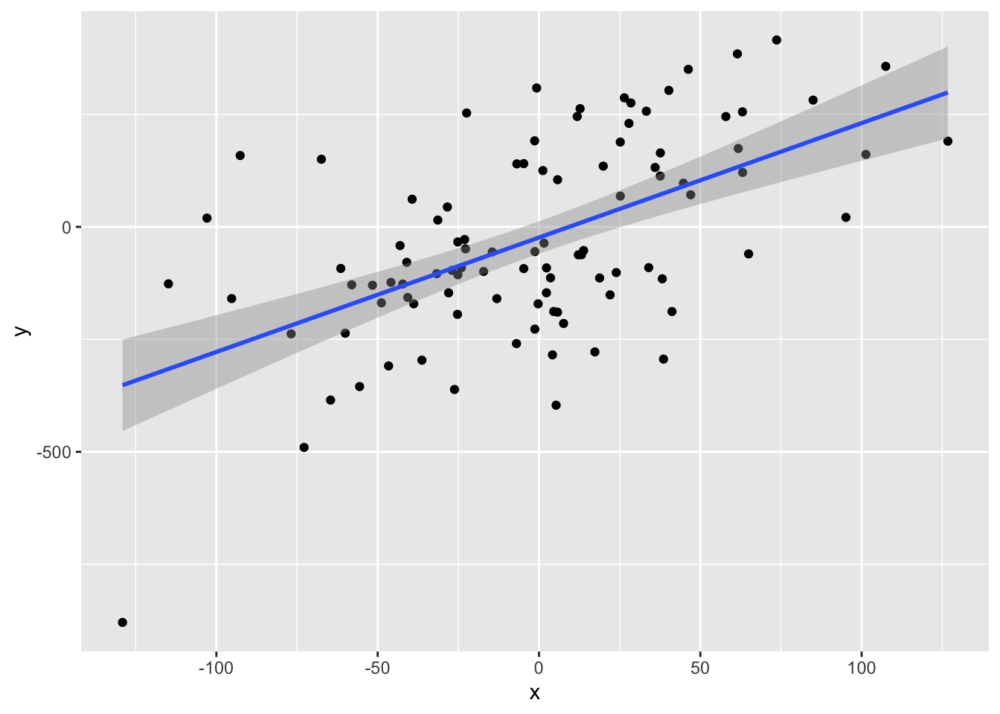
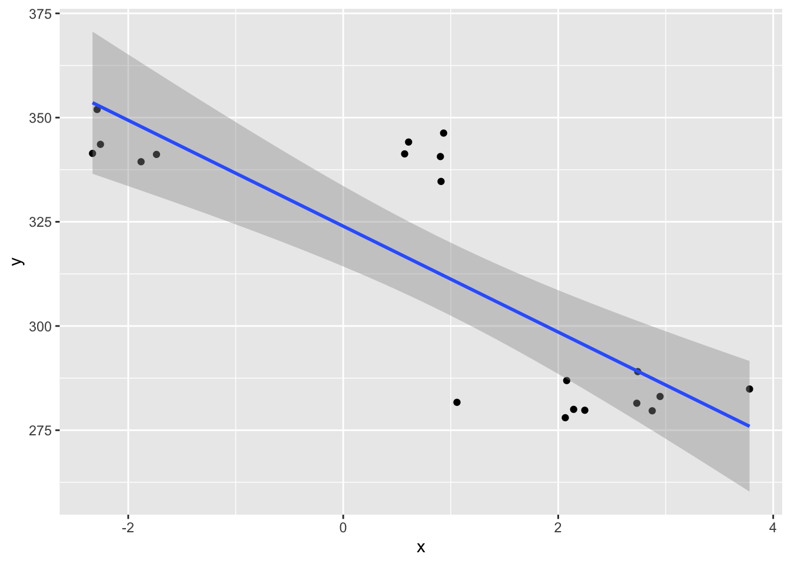

30 Simple linear regression
Simple linear regression models attempt to predict the value of some observed outcome random variable \(\boldsymbol{Y}\) as a linear function of a predictor random variable \(\boldsymbol{X}\).
For the \(i^{th}\) observation, we can write:
\[ y_{i} = \beta_{0} + \beta_{1} x_{i} + \epsilon_{i} \]
- \(y_{i}\) is the \(i^{th}\) observed outcome
- \(x_{i}\) is the \(i^{th}\) value of the predictor variable
- \(\epsilon_{i} \sim \mathcal{N}(0, \sigma_{\epsilon})\) is called the residual
- \(\beta_{0_{i}}\) and \(\beta_{1_{i}}\) are parameters of the linear regression model
Now imagine having many observations such that \(i \in [1, n]\):
\[\begin{align} \boldsymbol{y} &= \beta_{0} + \beta_{1} \boldsymbol{x} + \boldsymbol{\epsilon} \\\\ \boldsymbol{y} &= \beta_{0} \begin{bmatrix} 1\\ 1\\ \vdots\\ 1 \end{bmatrix} + \beta_{1} \begin{bmatrix} x_1\\ x_2\\ \vdots\\ x_n\\ \end{bmatrix} + \begin{bmatrix} \epsilon_1\\ \epsilon_2\\ \vdots\\ \epsilon_n\\ \end{bmatrix} \\\\ \boldsymbol{y} &= \begin{bmatrix} 1 & x_1 \\ 1 & x_2 \\ \vdots & \vdots \\ 1 & x_n \end{bmatrix} \begin{bmatrix} \beta_{0} \\ \beta_{1} \end{bmatrix} + \begin{bmatrix} \epsilon_1\\ \epsilon_2\\ \vdots\\ \epsilon_n\\ \end{bmatrix} \\\\ \boldsymbol{y} &= \boldsymbol{X} \boldsymbol{\beta} + \boldsymbol{\epsilon} \end{align}\]
30.0.0.1 How can we pick \(\boldsymbol{\beta}\) values that best fit our data?
- let \(y_i\) denote observed values
- let \(\hat{y_{i}}\) denote predicted values
\[\begin{align} \hat{y_{i}} &= E[y_{i}]\\ &= E[\beta_{0} + \beta_{1} x_{i} + \epsilon_{i}]\\ &= \beta_{0} + \beta_{1} x_{i} \end{align}\]
- The best fitting \(\boldsymbol{\beta}\) values are those that minimise the discrepancy between \(y_{i}\) and \(\hat{y_{i}}\).
\[ \DeclareMathOperator*{\argmin}{\arg\!\min} \argmin_{\boldsymbol{\beta}} \sum_{i=1}^{n} (y_{i} - \hat{y_{i}})^2 \]
The \(\boldsymbol{\beta}\) values that do this can be found by using a computer to try out a bunch of different values and recording which ones give the smallest error.
However, in this case, the \(\boldsymbol{\beta}\) values that minimise error can be solved for analytically. I won’t go through the derivation here, even though it is fairly simple to go through it. If you want to have a go on your own, the method is to take the derivative with respect to \(\boldsymbol{\beta}\), and then find the \(\boldsymbol{\beta}\) values that make the resulting expression equal to zero.
30.0.0.2 Regression model significance
Notice that \(\sum_{i=1}^{n} (y_{i} - \hat{y_{i}})^2\) is a sum of squares very much in the style of the sums of squares we have seen thus far in ANOVAs.
\(SS_{error} = \sum_{i=1}^{n} (y_{i} - \hat{y_{i}})^2\)
\(SS_{error}\) is sometimes called \(SS_{residual}\)
\(SS_{error}\) is what you get when you compare raw observations against the full model predictions.
\(SS_{total}\) is what you get when you compare raw observations against the grand mean.
\(SS_{total} = \sum_{i=1}^{n} (y_{i} - \bar{y_{i}})^2\)
Just as \(SS_{error}\) comes from \(\sum_{i=1}^{n} (y_{i} - \hat{y_{i}})^2\) with \(\hat{y} = \beta_{0} + \beta_{1} x + \epsilon\), you can think of \(SS_{total}\) as coming from \(\sum_{i=1}^{n} (y_{i} - \hat{y_{i}})^2\) with \(\hat{y} = \bar{y} + \epsilon\).
From this perspective, \(SS_{error}\) is the variability of the data around the prediction from the full model, and \(SS_{total}\) is the variability of the data around the mean (which is pretty much the simplest possible model and thus serves as a good baseline).
Finally \(SS_{model} = \sum_{i=1}^{n} (\bar{y} - \hat{y_i})^2\) essentially tells you how much the added complexity of the full model reduces the overall variability (i.e., makes better predictions).
The percent of variability accounted for above the simple model is given by:
\[ R^2 = \frac{SS_{model}}{SS_{total}} \]
- Does the more complex model provide a significantly better fit to the data than the simplest model? This is what the \(F\) ratio tells us.
\[ F = \frac{MS_{model}}{MS_{error}} \]
That is, the regression \(F\)-ratio tells us how much the regression model has improved the prediction over the simple mean model, relative to the overall inaccuracy in the regression model.
The \(F\) ratio tells us if the overall regression model provides a better fit to the data than the simple model, but we can also ask questions about the best fitting \(\beta\) values (i.e., is either \(\beta\) different from zero?).
We won’t prove this here, but it turns out the best fitting \(\beta\) values (i.e., \(\hat{\beta}\)) can be tested with a \(t\)-test.
30.0.0.3 Example: Predict one MEG channel from another
library(data.table)
library(ggplot2)
rm(list=ls())
d <- fread('https://crossley.github.io/book_stats/data/eeg/epochs.txt')
d[, V1 := NULL]
## convert from wide to long format
dd <- melt(d, id.vars=c('time', 'condition', 'epoch'))
## pick out some columns randomly
y <- dd[variable=='MEG 001', mean(value), .(epoch)][, V1]
x <- dd[variable=='MEG 010', mean(value), .(epoch)][, V1]
## visualise possible linear relationship
ddd <- data.table(x, y)
ggplot(ddd, aes(x, y)) +
geom_point() +
geom_smooth(method='lm')## `geom_smooth()` using formula = 'y ~ x'
##
## Call:
## lm(formula = y ~ x, data = ddd)
##
## Residuals:
## Min 1Q Median 3Q Max
## -527.21 -133.24 -4.46 118.84 417.85
##
## Coefficients:
## Estimate Std. Error t value Pr(>|t|)
## (Intercept) -23.6812 18.1518 -1.305 0.195
## x 2.5436 0.3759 6.766 1.01e-09 ***
## ---
## Signif. codes: 0 '***' 0.001 '**' 0.01 '*' 0.05 '.' 0.1 ' ' 1
##
## Residual standard error: 180.5 on 97 degrees of freedom
## Multiple R-squared: 0.3206, Adjusted R-squared: 0.3136
## F-statistic: 45.78 on 1 and 97 DF, p-value: 1.006e-09## [1] 0.3206392A correlation analysis provides information on the strength and direction of the linear relationship between two variables, while a simple linear regression analysis estimates parameters in a linear equation that can be used to predict values of one variable based on the other.
Note that
Multiple R-squaredis equal tocor(x,y)^2\(R^2 = \rho_{x,y}\)
30.0.0.4 Example: Speed-Accuracy trade-off in MIS data
library(data.table)
library(ggplot2)
rm(list=ls())
d <- fread('https://crossley.github.io/book_stats/data/mis/mis_data.csv')
## give subjects in different groups unique numbers
d[group==1, subject := subject + 10]
## define x and y
x <- d[, mean(error, na.rm=T), .(group, subject)][, V1]
y <- d[, mean(movement_time, na.rm=T), .(group, subject)][, V1]
## visualise possible linear relationship
ddd <- data.table(x, y)
ggplot(ddd, aes(x, y)) +
geom_point() +
geom_smooth(method='lm')## `geom_smooth()` using formula = 'y ~ x'
##
## Call:
## lm(formula = y ~ x, data = ddd)
##
## Residuals:
## Min 1Q Median 3Q Max
## -28.820 -11.013 -6.315 12.287 34.197
##
## Coefficients:
## Estimate Std. Error t value Pr(>|t|)
## (Intercept) 323.951 4.597 70.476 < 2e-16 ***
## x -12.703 2.154 -5.898 1.39e-05 ***
## ---
## Signif. codes: 0 '***' 0.001 '**' 0.01 '*' 0.05 '.' 0.1 ' ' 1
##
## Residual standard error: 18.62 on 18 degrees of freedom
## Multiple R-squared: 0.659, Adjusted R-squared: 0.6401
## F-statistic: 34.79 on 1 and 18 DF, p-value: 1.388e-05## [1] 0.659039## [1] 0.659039